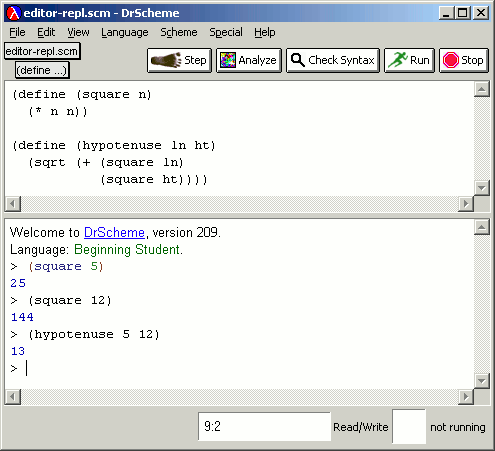
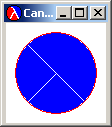

Teachers and professors often connect student code with libraries of advanced routines for graphics, networking, and so on. These libraries cannot be loaded using the load command, since they may use features not present in the student's language level.
DrScheme solves this problem through Teachpacks. These can use the full language, are loaded once per run of DrScheme, and are automatically invoked every time the user clicks Run. DrScheme comes with several Teachpacks that implement libraries, such as support to play and implement games and other extended exercises described in our textbook, How to Design Programs. A growing number of other texts now provide Teachpack support.
Language levels and Teachpacks therefore provide the best of both worlds: adequate error messages for beginners, and advanced features to create interesting lessons and demonstrate applications.
One commonly used Teachpack is a beginners' graphics library. It provides a simple interface to the extensive GUI available in DrScheme (which is used to construct DrScheme itself).
|  |
The output from this program is the following image.
|  |